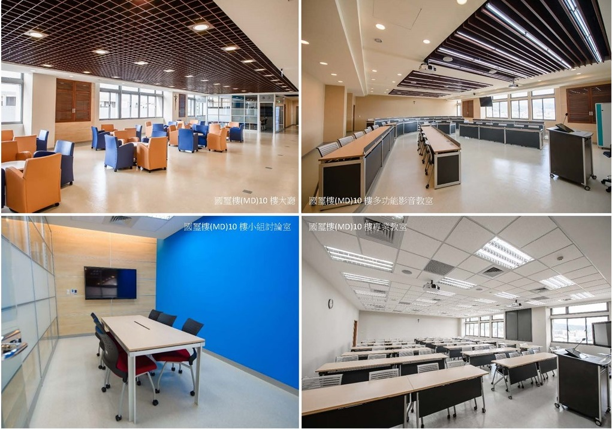
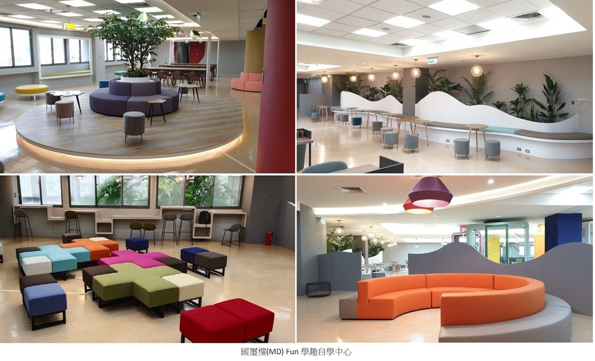

imMBA / 簡介About / 學習環境Our Learning Environment
學習環境Our Learning Environment
國璽樓(MD)人文大廳與專業教室MD lobby and professional classrooms
走進國璽樓(MD)，映入眼簾的是寬敞明亮的人文大廳，以及一粒麥陣陣的咖啡香，讓同學在充實課程和討論學習之餘，能隨時提振精神，獲得滿滿的能量。而位在國璽樓(MD)10-12樓是管理學院的專業教室設備新穎、休息空間舒適，國際經管(imMBA)學習空間也多安排在此。
Walking into Cardinal Tien Memorial Building (MD), you meet a bright humanities lobby and the aroma of Yilimai coffee, a lift between classes and discussions. The College of Management’s professional classrooms and comfortable lounges occupy MD floors 10–12, where most imMBA learning spaces are arranged.
可以說在國際經管(imMBA)求學，除了專業的師資陣容，國際多元同儕共同學習之外，還能享有五星級的優質學習環境，雄踞校園制高點，俯瞰美麗的輔大校園。
Studying in imMBA means professional faculty, a diverse international cohort, and a five-star learning setting at the high point of campus, looking out over Fu Jen.


國璽樓圖書館與Fun學趣自學中心Library and Fun Learning Center
國璽樓3、4、5樓是藏書豐富的圖書館，埋頭研究之餘，偶而遠眺窗外，靜心沉思。不容錯過位於5樓新落成的e化「Fun學趣自學中心」，學習創作更有感。
Floors 3–5 of the Cardinal Tien Building house a well-stocked library for research, with views for quiet thought. Do not miss the newly opened e-learning Fun Learning Center on the 5th floor, made for creating as you study.
